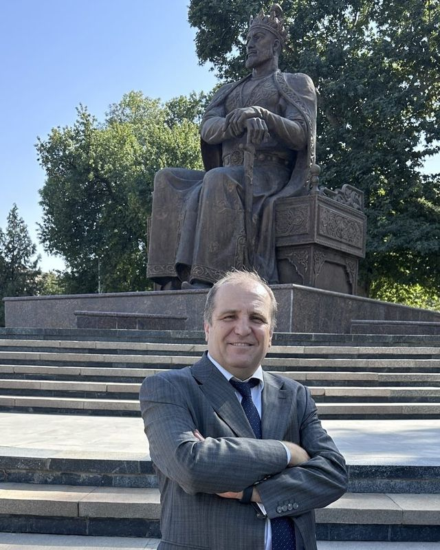

Özgeçmiş
Arif Yılmaz, Uşak Üniversitesi İnsan ve Toplum Bilimleri Fakültesi Türk Dili ve Edebiyatı Bölümünde Yeni Türk Edebiyatı Anabilim Dalı öğretim üyesidir. Lisans öğrenimini 1992’de Yüzüncü Yıl Üniversitesinde tamamladı. Gazi Üniversitesinde Prof. Dr. Sadık Kemal Tural danışmanlığında Niyazi Yıldırım Gençosmanoğlu üzerine yüksek lisans tezini (1996), Ankara Üniversitesinde Prof. Dr. Ramazan Kaplan danışmanlığında Sabahattin Kudret Aksal üzerine doktora tezini (2004) hazırladı.
Araştırma görevliliğini Celâl Bayar Üniversitesinde (1993–1999) ve Ankara Üniversitesinde (1999–2005) yaptı. Bu yıllarda bir dönem University of Wisconsin-Madison’daki Middle East Studies Programında bulundu (1996–1997). Millî Eğitim Bakanlığı görevlendirmesiyle Halep Üniversitesi Edebiyat Fakültesi Türk Dili ve Edebiyatı Bölümünün kuruluşunda görev aldı (2005–2008). Gaziantep Üniversitesinde (2008–2012) Türkçe Eğitimi Bölüm Başkanlığı yaptı ve Türkçe Öğretimi Uygulama ve Araştırma Merkezinin kurucu müdürü oldu.
2012’den beri Uşak Üniversitesindedir. 2018’de doçent oldu. Sosyal Bilimler Enstitüsü müdür yardımcılığı, Yeni Türk Edebiyatı Anabilim Dalı başkanlığı ve Türk Dili ve Edebiyatı Bölümü başkanlığı görevlerinde bulundu. 2024–2025 güz yarıyılında Özbekistan’da Semerkant Devlet Yabancı Diller Enstitüsünde misafir öğretim üyesi olarak ders verdi.
Çalışmaları Tanzimat’tan bugüne Türk şiiri, romanı, hikâyesi ve tiyatrosu ile metin neşri üzerinde yoğunlaşır. Sabahattin Kudret Aksal’ın öykü, şiir ve düz yazılarını, Niyazi Yıldırım Gençosmanoğlu’nun bütün şiirlerini ve Halid Ziya Uşaklıgil’in Bir Acı Hikâye’sini eleştirel basımlarla yayına hazırladı. Aksal üzerine çalışmalarıyla 2019 Sabahattin Kudret Aksal Yazın Ödülü kapsamında Seçiciler Kurulu Özel Ödülü aldı.
Çalışma alanları
- Şiir
- Tanzimat ve Servet-i Fünun şiiri, Mehmet Âkif Ersoy, Orhan Veli ve Yeni Garip, Sabahattin Kudret Aksal, Niyazi Yıldırım Gençosmanoğlu, Abdurrahim Karakoç ve dijital çağda şiir
- Roman
- Peyami Safa, Kemal Tahir, Dinçer Sümer, fantastik ve büyülü gerçekçilik, roman okuru
- Hikâye
- Orhan Kemal, Kemal Bilbaşar, Füruzan, Cemil Kavukçu ve 1980 sonrası Türk hikâyesi
- Tiyatro
- Epik tiyatro, Recep Bilginer, Vasıf Öngören’in Asiye Nasıl Kurtulur? oyunu
- Metin neşri
- Eleştirel basım, edebî mektuplar, Aksal ve Gençosmanoğlu külliyatları
- Yöntem
- Değerler göstergebilimi, mekân kuramı, psikanalitik ve ekoeleştirel okuma
- Karşılaştırma
- Türk ve Özbek edebiyatlarında toplumcu gerçekçilik


Yayınlar
Yayınlar yeniden eskiye sıralanmıştır. Ortak yazarlı çalışmalarda yazarlar yayımlandığı sırayla verilmiştir. Kitapların kapak, içindekiler, giriş, sonuç ve kaynakça sayfaları ile bazı bildirilerin tam metinleri PDF olarak indirilebilir.
Telif kitaplar 4
- 2012
Kemal Bilbaşar’ın Öykücülüğü. Türkçe Mevsimi, Uşak. Tanıtım sayfaları (PDF)
- 2012
Şeyh Vasfi ve Muallim Naci ile Mektupları. Türkçe Mevsimi, Uşak (2. basım 2013). Tanıtım sayfaları (PDF)
- 2010
Sabahattin Kudret Aksal: Hayatı, Sanatı ve Şiirleri Üzerinde Bir Araştırma. Millî Eğitim Bakanlığı Yayınları. Tanıtım sayfaları (PDF)
- 2000
Niyazi Yıldırım Gençosmanoğlu: Hayatı ve Şiir Sanatı. Atatürk Kültür Merkezi Başkanlığı Yayınları. Tanıtım sayfaları (PDF)
Eleştirel basımlar ve yayına hazırlamalar 12
- 2025
Halid Ziya Uşaklıgil, Bir Acı Hikâye. Eleştirel basım. Telve. Tanıtım sayfaları (PDF)
- 2023
Niyazi Yıldırım Gençosmanoğlu, Destanlar Burcu (genişletilmiş), Bozkurtların Destanı, Alperenler Destanı ve Dede Korkut’tan Boğaç Han ve Salur Kazan Destanları. Yeniden düzenlenmiş eleştirel basım, dört kitap. Bilge Kültür Sanat. Tanıtım sayfaları (PDF): Destanlar Burcu, Bozkurtların Destanı, Alperenler Destanı, Dede Korkut’tan Boğaç Han ve Salur Kazan Destanları
- 2018
Sabahattin Kudret Aksal, Denemeler, Konuşmalar. Genişletilmiş eleştirel basım (2. basım). Yapı Kredi Yayınları. Tanıtım sayfaları (PDF)
- 2018
Sabahattin Kudret Aksal, Yazılar, Yanıtlar. Yapı Kredi Yayınları. Tanıtım sayfaları (PDF)
- 2008
Sabahattin Kudret Aksal, Bütün Şiirleri (Şiirler 1938–1993). Eleştirel basım. Yapı Kredi Yayınları. Tanıtım sayfaları (PDF)
- 2005
Sabahattin Kudret Aksal, Gazoz Ağacı ve Diğer Öyküler. Eleştirel basım. Yapı Kredi Yayınları. Tanıtım sayfaları (PDF)
- 2002
Niyazi Yıldırım Gençosmanoğlu, Bütün Şiirleri 1–3: Destanlar Burcu, Bozkurtların Destanı, Alperenler Destanı. Eleştirel basım. Türk Edebiyatı Vakfı Yayınları. Tanıtım sayfaları (PDF): Destanlar Burcu, Bozkurtların Destanı, Alperenler Destanı
Kitap bölümleri ve ansiklopedi maddeleri 6
- 2026
“Recep Bilginer’in Tiyatroları ve Tiyatro Anlayışı.” Türk Tiyatrosu (Hece Özel Sayı 52), C. 1, ed. Koray Üstün ve Nurtaç Ergün Atbaşı, s. 909–924. Hece.
- 2025
Arif Yılmaz ve Berkay Şen. “Henri Lefebvre’nin Mekânsal Üçlü Kuramı Bağlamında Asiye Nasıl Kurtulur? Oyunu.” Prof. Dr. Abide Doğan Armağanı, s. 479–496. Paradigma Akademi.
- 2023
“Kemal Bilbaşar’ın Öykülerinde Göç Olgusu.” Türk Edebiyatında Ekonomik Kaynaklı Göç Konulu Eserler Üzerine İncelemeler, ed. Ayfer Yılmaz, s. 243–261. Sonçağ.
- 2023
“Sabahattin Kudret Aksal (1920–1993).” Atatürk Ansiklopedisi (madde). Atatürk Araştırma Merkezi.
- 2023
“Sezai Karakoç’ta Metafizik Mizaç.” Sezai Karakoç, ed. Fatma Atay. Diyanet İşleri Başkanlığı Yayınları.
- 2020
“Sabahattin Kudret Aksal ve Şiirleri Üzerine.” Sabahattin Kudret Aksal’a Armağan, ed. Adil İzci, s. 76–89. Ve Yayınevi.
Hakemli dergi makaleleri 16
- 2026
Berkay Şen ve Arif Yılmaz. “Philippe Hamon’un İdeolojik Çözümleme Modeli ve Esir Şehrin Mahpusu Romanında Normatif Değer Üretimi.” Edebî Eleştiri Dergisi 10 (2): 667–681. doi:10.31465/eeder.1938714
- 2026
Arif Yılmaz ve Berkay Şen. “Konforun Estetiği ve Mücadelenin Etiği: Esir Şehrin İnsanlarında İki Zıt Değer Dizgesi Olarak Nermin ve Nedime.” YAZIT Kültür Bilimleri Dergisi 6 (1): 170–191. doi:10.59902/yazit.1896108
- 2025
Arif Yılmaz ve Büşra Ulusoy. “Fantastik ile Büyülü Gerçekçiliğin Sınırları Üzerine Kavramsal Bir İnceleme.” Uluslararası Dil, Edebiyat ve Kültür Araştırmaları Dergisi 8 (3): 1271–1285. doi:10.37999/udekad.1720020
- 2023
Arif Yılmaz ve Fatih Bayram. “Dinçer Sümer’in Romanlarında Cinsel Kimlik İnşasındaki Sorunlar ve Çözüm Önerileri.” RumeliDE Dil ve Edebiyat Araştırmaları Dergisi 37: 378–392. doi:10.29000/rumelide.1405747
- 2023
Bayram Bilir ve Arif Yılmaz. “Özbek Edebiyatında Toplumcu Gerçekçilik.” Uluslararası Türk Lehçe Araştırmaları Dergisi (TÜRKLAD) 7 (2): 249–260. doi:10.30563/turklad.1365957
- 2023
Arif Yılmaz ve Fatih Bayram. “Epik Tiyatroda Merak Duygusunun Kırılması.” RumeliDE Dil ve Edebiyat Araştırmaları Dergisi 35: 423–438. doi:10.29000/rumelide.1342128
- 2017
Arif Yılmaz ve Burcu Uşaklı Sandal. “Füruzan’ın Öykülerinde Oidipal Kadın Kahramanlar ve Anne-Kız Çatışmaları.” Turkish Studies 12 (15): 667–686. doi:10.7827/TurkishStudies.11625
- 2015
Arif Yılmaz ve Nergiz Gümüş Özdemir. “Hüseyin Sîret’in ‘Leyâl-i Girîzân’ Adlı Şiiri.” Uluslararası Sosyal ve Eğitim Bilimleri Dergisi 2 (4): 148–174. doi:10.20860/ijoses.51448
- 2012
“İsmail Safa’nın Şiir Anlayışı ve Ilımlılar.” Gaziantep Üniversitesi Sosyal Bilimler Dergisi 11 (1): 137–158. Tam metin (DergiPark)
- 2012
“Mehmet Âkif Ersoy’un Şiirlerinde Halk Kültürü Ögeleri.” Mustafa Kemal Üniversitesi Sosyal Bilimler Enstitüsü Dergisi 9 (17): 163–194. Tam metin (DergiPark)
- 2011
“Orhan Veli’de Kaçış.” Gaziantep Üniversitesi Sosyal Bilimler Dergisi 10 (1): 257–279. Tam metin (DergiPark)
- 2010
“Sosyal ve Siyasî Değişmeler Açısından Peyami Safa’nın Mahşer Romanı.” Yeni Türk Edebiyatı Araştırmaları 3: 39–57. Tam metin (DergiPark)
- 2009
“Mehmet Âkif Ersoy’un Şiirlerinde Halk Dilinin Kullanımı.” Mustafa Kemal Üniversitesi Sosyal Bilimler Enstitüsü Dergisi 6 (11): 189–210. Tam metin (DergiPark)
- 2006
“Sabahattin Kudret Aksal’ın Şiirlerinde ‘Kaçış’ Teması.” Türk Dili 91 (653): 421–432.
- 2005
“Sabahattin Kudret Aksal’ın Hikâyeleri.” Türk Dili 90 (645): 254–263.
- 2002
“Atsız’ın Niyazi Yıldırım Gençosmanoğlu’na Gönderdiği Mektuplar.” Türk Yurdu 22 (184): 44–49.
Bildiriler 12
- 2025
Arif Yılmaz ve Aysel Akdağ Uygun. “Cemil Kavukçu’nun Öykülerinde Yalnızlık Tezahürleri: Ekoeleştirel Bir Okuma.” 13th International New York Academic Research Congress on Social, Humanities, Administrative and Educational Sciences, s. 448–460. doi:10.30546/19023.978-9952-8573-9-9.2025.9012 Tam metin (PDF)
- 2025
Arif Yılmaz ve Aysel Akdağ Uygun. “Cemil Kavukçu’nun Öykülerinde Tabiatın İyileştirici Gücü.” 7. Uluslararası Karadeniz Modern Bilimsel Araştırmalar Kongresi, s. 1–10.
- 2024
“Dijital Çağda Şiirin Metamorfozu: İbrahim Tenekeci’nin Instagram Paylaşımları Üzerine Bir İnceleme.” Globallashuv davrida filologiya fanlarini o‘qitishning dolzarb muammolari (Karşı, Özbekistan), s. 17–26.
- 2024
“Yakın Dönem Türk Romanlarında Yabancılaşmanın Dili: Sembol.” The Development History and Modern Significance of Intercultural Dialogue (Semerkant), s. 621–626.
- 2024
Arif Yılmaz ve Mustafa Çiçek. “Abdurrahim Karakoç’un Vur Emri Şiir Kitabında Yer Alan Halk Bilimi Öğeleri.” 12. Uluslararası Başkent Sosyal, Beşeri, İdari ve Eğitim Bilimleri Kongresi, s. 1086–1101. doi:10.5281/zenodo.11194274 Tam metin (PDF)
- 2023
Arif Yılmaz ve Bayram Bilir. “Türk Edebiyatında Toplumcu Gerçekçi Romanların Ortaya Çıkışı.” Tilshunoslik va lingvodidaktikaning istiqbolli yo‘nalishlari (Semerkant), s. 234–238.
- 2023
Bayram Bilir ve Arif Yılmaz. “İlköğretimde Toplumcu Gerçekçi Eserler Meselesi.” Global Issues of Primary Education Development: Problem, Research, s. 290–292.
- 2023
Bayram Bilir ve Arif Yılmaz. “Toplumcu Gerçekçi Özbek Romanlarında Rüşvet Kronotopu.” Global and National Values Along Great Silk Road: Language, Education and Culture, s. 100–102.
- 2023
Arif Yılmaz ve Mustafa Çiçek. “Abdurrahim Karakoç’un Şiirlerinde Halk Bilimi Öğeleri” (özet). 8th International Congress on Humanities and Social Sciences in a Changing World, s. 218–219.
- 2023
Arif Yılmaz ve Fatih Bayram. “Epik Tiyatroda Kullanılan Tekniklerin İşlevselliği.” 5th International “Artemis” Congress on Humanities and Social Sciences, s. 339–345. Tam metin (PDF)
- 2023
Arif Yılmaz ve Fatih Bayram. “Epik Tiyatroda Ara Oyun Kullanımı” (özet). 5th International “Artemis” Congress on Humanities and Social Sciences, s. 322–323.
- 2016
Arif Yılmaz ve Aykut Çelik. “Mizah Kavramı Çerçevesinde Yeni Garipçi Şiire Bir Bakış.” 1. Uluslararası Sosyal Bilimler Sempozyumu, s. 3075–3091.
Diğer yazılar 8
- 2026
“Romanı Okuyan, Romanda Kaybolan: Cemil Meriç’te Roman Okuru Üzerine.” Türk Dili 894: 40–47.
- 2024
“Niyazi Yıldırım Gençosmanoğlu Üzerine Bir Söyleşi.” İmbik: Kültür, Sanat ve Edebiyat Dergisi 4 (25): 20–24.
- 2022
“Samiha Ayverdi’nin Hancı Adlı Eseri.” İLESAM İlim ve Edebiyat Dergisi 37: 5–12.
- 2021
“Niyazi Yıldırım Gençosmanoğlu’nun Şiir Kitaplarının Yeniden Yayımlanması Üzerine.” İLESAM İlim ve Edebiyat Dergisi 7 (32): 35–41.
- 2014
“Asrımızın Dede Korkut’u Niyazi Yıldırım Gençosmanoğlu.” Devlet 454: 86–94.
- 2005
Kitap tanıtımı: Sadık Tural, Edebiyat Bilimine Katkılar I. Türk Dili 90 (644): 181–186.
- 2004
“Toplumsal Gerçekçilik Bağlamında Orhan Kemal’in Hikâyeleri.” Hece Öykü 4: 86–91.
- 2004
“Niyazi Yıldırım Gençosmanoğlu’nun Düz Yazıları.” Bizim Külliye 22: 45–51.
Dersler
Uşak Üniversitesi Türk Dili ve Edebiyatı Bölümünde verdiği lisans dersleri:
- Tanzimat Edebiyatı (Şiir)
- Servet-i Fünun Edebiyatı (Şiir)
- 1980 Sonrası Türk Hikâyesi
- Akademik Türkçe Konuşma ve Dinleme (üniversite ortak seçmeli)
Yönettiği tezler
Uşak Üniversitesi Lisansüstü Eğitim Enstitüsünde tamamlanan tezler.
- 2026
Büşra Ulusoy. Engin Geçtan’ın romanlarında büyülü gerçekçilik: Gerçekliğin sihirli kapıları. Yüksek lisans.
- 2025
Mustafa Çiçek. 1980 sonrası Türk şiirinde İslami duyarlılık. Doktora.
- 2025
Talip Karaoğlu. Türk romanında mültecilik ve mülteci (2000–2025). Yüksek lisans.
- 2024
Bayram Bilir. Türk ve Özbek edebiyatlarında toplumcu gerçekçi romanların kronotopları. Doktora.
- 2024
Fatih Bayram. Epik tiyatronun Türk edebiyatına yansıması ve eserlerin incelenmesi. Doktora.
- 2016
Burcu Uşaklı Sandal. Füruzan’ın öyküleri üzerine psikanalitik bir inceleme. Yüksek lisans.
Bağlantılar
- Google Akademik Yayınlar ve atıflar
- ORCID 0000-0002-2652-3649
- Uşak Üniversitesi AVESİS avesis.usak.edu.tr/arif.yilmaz
- DergiPark @ayilmaz_1038
- Web of Science ResearcherID ACV-6378-2022
- ResearchGate Arif-Yilmaz
Uşak Üniversitesi, İnsan ve Toplum Bilimleri Fakültesi, Türk Dili ve Edebiyatı Bölümü, Uşak.
Fotoğraflar

